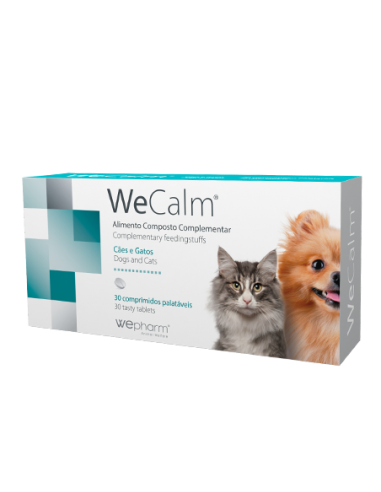

‹
WeCalm

Mais informações
WeCalm é um alimento complementar para cães e gatos que acalma e relaxa animais de estimação. Indicado para
situações de stress ambiental, trovoadas, fogos de artifício, desmame, separação, viagens, estadia em canil e
comportamento indesejável.
WeCalm pode ser misturado com a comida do animal ou administrado diretamente na boca.
Constituintes Analíticos
-
Proteína bruta 37%
-
Matéria Gorda bruta 5%
-
Fibra bruta 17%
-
Cinza bruta 13%
-
Carbohidratos bruto 28%
-
Kcal 234/100gr
Situações Pontuais
Administrar uma a duas horas antes do evento. Pode ser repetido se o efeito desejado não for alcançado. A
quantidade pode ser reduzida de acordo com o efeito desejado.
Largo Prazo
Administrar metade da dose normal conforme necessário. A dose pode ser reduzida logo que os efeitos são
verificados, e pode ser repetida, uma vez ao dia, como reforço para melhorar o efeito.